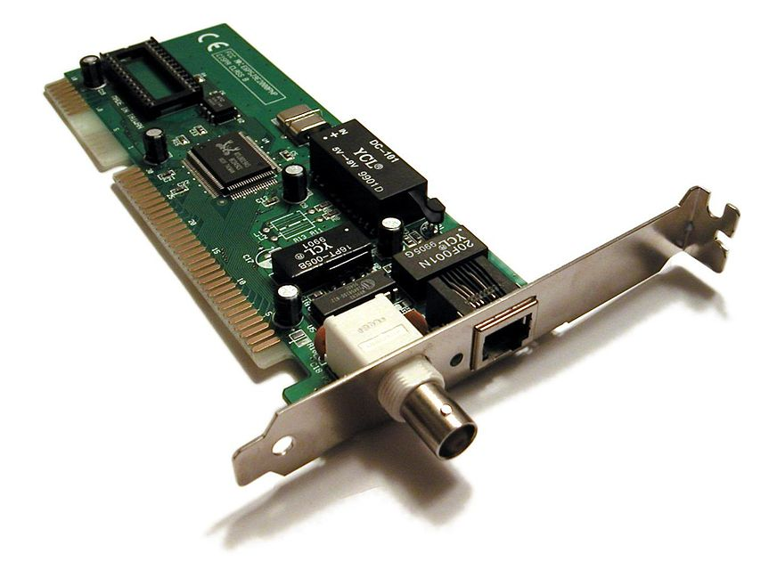

Network Interface Cards can be a network card, network adapter, LAN Adapter or NIC (network interface card). They are a piece of computer hardware designed to allow computers to communicate over a computer network. It is used for fault communication via cable. Data is transmitted over a cable network. The NIC connects computers and other devices such as printers. Many modern motherboards have NICs built in by default.
